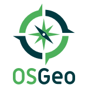
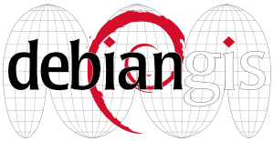
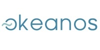

Sponsors OSGeoLive¶
L’Open Source Geospatial Foundation (OSGeo) fournit l’infrastructure principale de développement et d’hébergement ainsi que le personnel pour le projet, et pour de nombreuses équipes logicielles qui y contribuent.
Jirotech fournit les ressources et le personnel nécessaires à la gestion et au développement du projet OSGeoLive.
L’Information Center for the Environment de l’Université de Californie, Davis fournit des ressources matérielles et un support au développement du projet OSGeoLive.
Le laboratoire de télédétection de la National Technical University of Athens, fournit des ressources matérielles et un support au développement du projet OSGeoLive.
Les projets DebianGIS et UbuntuGIS fournissent et garantissent la qualité de nombreux paquets de base.
Okeanos est le service de cloud computing académique grec (IaaS) qui fournit gratuitement des ressources informatiques virtualisées aux universités grecques et aux centres de recherche publics. Okeanos est construit sur la base de logiciels open source éprouvés existants (comme Synnefo, Google Ganeti). Okeanos fournit gracieusement des machines virtuelles pour la construction des images ISO OSGeoLive.

Georepublic est une société de technologie de géolocalisation, qui embrasse l’idée du Logiciel Libre, et fournit du support et du développement personnalisé pour les logiciels SIG Open Source.
La fondation OSGeo¶
Donner le pouvoir à tout le monde avec le géospatial open source
La fondation Open Source Geospatial (OSGeo) est un organisme à but non lucratif qui a pour mission de favoriser l’adoption mondiale de la technologie géospatiale ouverte en étant une fondation logicielle inclusive vouée à une philosophie ouverte et à un développement participatif axé sur la communauté.
Les activités de sensibilisation et les activités d’OSGeo incluent:
- Chapitres locaux: Des groupes locaux, régionaux et linguistiques supportent les activités de base.
- GeoForAll: Plus de 100 laboratoires éducatifs dans le monde entier qui travaillent avec des partenaires pour rendre l’éducation et les possibilités géospatiales accessibles à tous.
- OSGeoLive: Une distribution de logiciels open source géospatiaux établis, pré-configurés avec des données exemples et des guides de démarrage rapide, prêts à être essayés.
- FOSS4G: La conférence annuelle, international pour les Free and Open Source Software for Geospatial, ainsi que de nombreux événements régionaux et locaux.
Contributeurs¶
Erreur
A FAIRE: Ajouter une table csv
Traducteurs¶
Erreur
A FAIRE: translators.csv